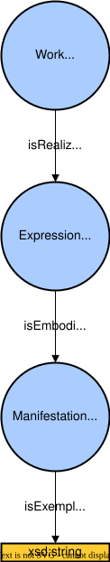

Introduction#
Fedlex#
The Swiss federal government operates the Fedlex platform to publish the federal law. The platform provides a website as frontend with easy navigable functions. For some cases, it is beneficial to work directly with the raw data (that is the basis for the frontend website) that is available in RDF format through a SPARQL GUI.
JOLux#
The JOLux schema is an RDF data schema for describing legislative resources and their relationships.
JOLux is based on recent developments in bibliographical description, adapting the FRBR model (Functional requirements for Bibliographic Records, developed by the IFLA) in order to describe legislative resources.
Work, Expression and Manifestation#
The different legislative resources are always described through different levels of abstraction. The main levels are:
jolux:Work
jolux:Expression
jolux:Manifestation
The level jolux:Work is a general abstraction for all the different legal resources whereas the jolux:Expression is a language specific representation of the jolux:Work and the jolux:Manifestation is a document format specific representation of the jolux:Expression. All the entries with type jolux:Work have additional types set to differentiate between the diverse legal resources.
The vocabulary used to connect jolux:Work, jolux:Expression and jolux:Manifestation is shown in the following figure:

Relation between jolux:Work, jolux:Expression und jolux:Manifestation.#
Fedlex URI and URL#
All URI of Fedlex raw data resources start with: https://fedlex.data.admin.ch/eli whereas eli is an abbreviation for European Legislation Identifier.
These URI can be found on the website of Fedlex through a search. The raw data URI is not the URL shown in the browser address field but can be copied by clicking on the chain icon. If an an URI is put into the browser address field, there is an automatic redirection to the webpage URL that displays the corresponding resource.
Examples for the federal constitution in the CC:
The easiest way to have a graph like representation of a Fedlex URI is to put it on the metadata viewer of the Fedlex platform. Links to the metadata viewer with prefilled URI can be programmatically created via URL parameter value:
https://fedlex.data.admin.ch/en-CH/metadata?value=https://fedlex.data.admin.ch/eli/cc/1999/404
Namespaces Declarations#
The following namespaces are used throughout this documentation:
PREFIX |
URI |
|---|---|
jolux |
|
schema |
|
skos |
|
dcterm |
|
xsd |
|
rdfs |
|
rdf |